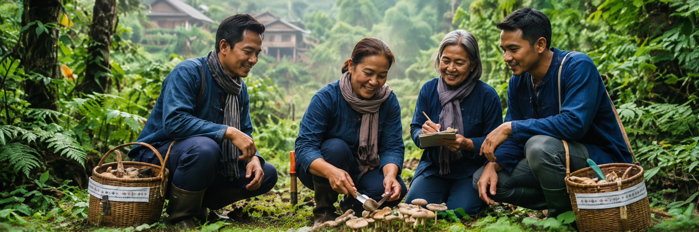

verifiedจังหวัดขอนแก่นป่าชุมชนบ้านโนนศิลา
แหล่งข้อมูลภาคสนามในพื้นที่จังหวัดขอนแก่น สำหรับการเก็บรวบรวมข้อมูลและภาพถ่ายเห็ดป่าในพื้นที่ภาคตะวันออกเฉียงเหนือ
MushroomLens เป็นเว็บแอปพลิเคชันที่พัฒนาขึ้นเพื่อสนับสนุน การจำแนกชนิดเห็ดป่าจากภาพถ่าย โดยประยุกต์ใช้ปัญญาประดิษฐ์ ร่วมกับฐานข้อมูลความรู้เกี่ยวกับเห็ดในประเทศไทย เพื่อช่วยให้ผู้ใช้งานเข้าถึงข้อมูลได้อย่างสะดวกและเป็นระบบ
ทุกสายพันธุ์ในระบบถูกจัดเป็น 3 ระดับ เลือกดูตามระดับได้ทันที
คลิกที่การ์ดเพื่อดูข้อมูลลักษณะเด่น แหล่งที่พบ และเห็ดที่มีลักษณะคล้ายกัน
ระยะดอกไข่ของทั้งสองชนิดหน้าตาใกล้เคียงกันมาก เห็ดระโงกหินมีพิษ amatoxins ทำลายตับและไต อาจถึงแก่ชีวิต ห้ามเก็บระยะไข่
ผ่าดูเนื้อใน เห็ดเผาะอ่อนเนื้อในสีขาว ส่วนเห็ดไข่หงส์เนื้อในเป็นสีม่วงดำหรือดำตั้งแต่ยังเล็ก หากไม่แน่ใจห้ามรับประทาน
เลือกรูปเห็ดที่ต้องการตรวจสอบ ระบบจะช่วยประเมินชนิดเป็นข้อมูลประกอบการตัดสินใจ
ข้อควรระวัง:ผลการวิเคราะห์จากระบบ AI เป็นเพียงข้อมูลประกอบการจำแนกชนิดเห็ด ไม่สามารถใช้ยืนยันความปลอดภัยในการบริโภคจากภาพถ่ายเพียงอย่างเดียว ควรตรวจสอบกับผู้เชี่ยวชาญก่อนบริโภคทุกครั้ง
องค์ความรู้ด้านเห็ดราถูกรวบรวมจากผู้เชี่ยวชาญท้องถิ่น นักวิจัย และแหล่งข้อมูลที่เกี่ยวข้อง เพื่อพัฒนาฐานข้อมูลสำหรับสนับสนุนการจำแนกชนิดเห็ดและการเข้าถึงข้อมูลด้านความปลอดภัย
จุดแสดงตำแหน่งของชุมชนนักเก็บเห็ดและศูนย์วิจัยภูมิภาคที่ร่วมส่งต่อภาพถ่ายและข้อมูลทางนิเวศวิทยา

verifiedจังหวัดขอนแก่นแหล่งข้อมูลภาคสนามในพื้นที่จังหวัดขอนแก่น สำหรับการเก็บรวบรวมข้อมูลและภาพถ่ายเห็ดป่าในพื้นที่ภาคตะวันออกเฉียงเหนือ
เพื้นที่ป่าชุมชนในตำบลท่านางแนว อำเภอแวงน้อย จังหวัดขอนแก่น ซึ่งเป็นแหล่งข้อมูลภาคสนามสำหรับการเก็บภาพและข้อมูลเกี่ยวกับเห็ดป่าในพื้นที่ภาคตะวันออกเฉียงเหนือ
เครือข่ายชุมชนที่มีประสบการณ์ในการเก็บเห็ดป่าและร่วมสนับสนุนข้อมูลภาพถ่าย ลักษณะเห็ด และแหล่งที่พบ เพื่อใช้ประกอบการจัดทำฐานข้อมูลเห็ดของโครงการ
ข้อมูลที่ใช้ฝึก AI ผ่านการคัดกรอง 3 ขั้นตอน
บันทึกภาพเห็ดในสภาพแวดล้อมจริง พร้อมแหล่งที่พบ
ยืนยันชนิดและความเป็นพิษก่อนนำเข้าชุดข้อมูล
ใช้เฉพาะข้อมูลที่ผ่านการรับรองเพื่อเพิ่มความแม่นยำ
ข้อจำกัดความรับผิดชอบ: ผลจาก AI ใช้ประกอบการตัดสินใจเท่านั้น ไม่สามารถยืนยันว่ากินได้จากภาพถ่ายอย่างเดียว ควรนำเห็ดไปให้ผู้เชี่ยวชาญในท้องถิ่นตรวจสอบทุกครั้งก่อนบริโภค
การผสาน AI (Transfer Learning) เข้ากับ UX Design เพื่อเพิ่มความปลอดภัยของผู้เก็บเห็ดป่า
ศึกษาสถิติการเกิดพิษจากเห็ดและพฤติกรรมของผู้เก็บเห็ดในชุมชน
ศึกษาปัญหาการเข้าถึงและทำความเข้าใจข้อมูลเห็ด เพื่อพัฒนาเว็บไซต์ที่ผสาน AI จำแนกภาพและนำเสนอข้อมูลที่เกี่ยวข้องแก่ผู้ใช้
ออกแบบหน้าจอ และฝึกโมเดลจากภาพเห็ดที่กินได้เท่านั้น (549 ภาพ, 15 สายพันธุ์)
ทดสอบการใช้งานกับผู้ใช้กลุ่มเป้าหมาย และวัดความปลอดภัยของการสื่อสารผลลัพธ์
ข้อจำกัดความรับผิดชอบ:ผลการจำแนกภาพเป็นเพียงข้อมูลเบื้องต้น อาจมีความคลาดเคลื่อน ไม่ควรใช้ยืนยันชนิดหรือความปลอดภัยของเห็ดเพื่อการบริโภค ควรนำเห็ดไปให้ผู้เชี่ยวชาญในท้องถิ่นตรวจสอบทุกครั้งก่อนบริโภค
การพัฒนาแอปพลิเคชันจำแนกเห็ดป่ากินได้ในประเทศไทยด้วย AI ร่วมกับการออกแบบประสบการณ์ผู้ใช้ (UX Design) เพื่อความปลอดภัยของชุมชน
การพัฒนา MushroomLens ใช้กระบวนการออกแบบ Double Diamond เพื่อทำความเข้าใจปัญหาและความต้องการของผู้เก็บเห็ดป่าในชุมชนอย่างรอบด้าน โดยกลุ่มเป้าหมายผู้ที่สนใจการเรียนรู้เกี่ยวกับเห็ด
ด้านเทคนิค ใช้ Transfer Learning ปรับแต่งโครงข่ายประสาทเทียมให้จำแนกสายพันธุ์เห็ดที่พบในประเทศไทย โดยฝึกจากภาพเห็ดที่ผู้เชี่ยวชาญในท้องถิ่นยืนยันแล้วว่ากินได้แน่นอนเท่านั้น ส่วนเห็ดพิษและเห็ดที่ต้องตรวจสอบเป็นการยกตัวอย่างขึ้นมาเพื่อให้ผู้ใช้เห็นภาพมากขึ้นและใช้เพื่อแสดงคำเตือนในแอปเท่านั้น